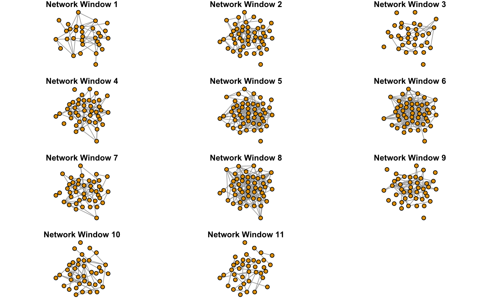
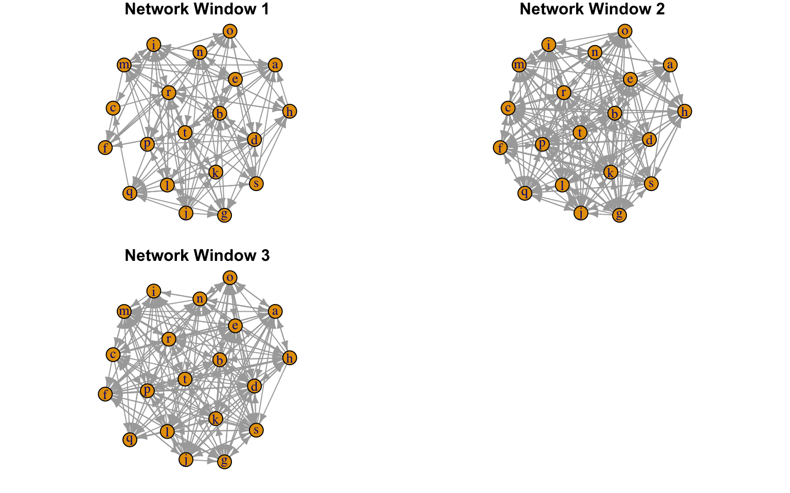
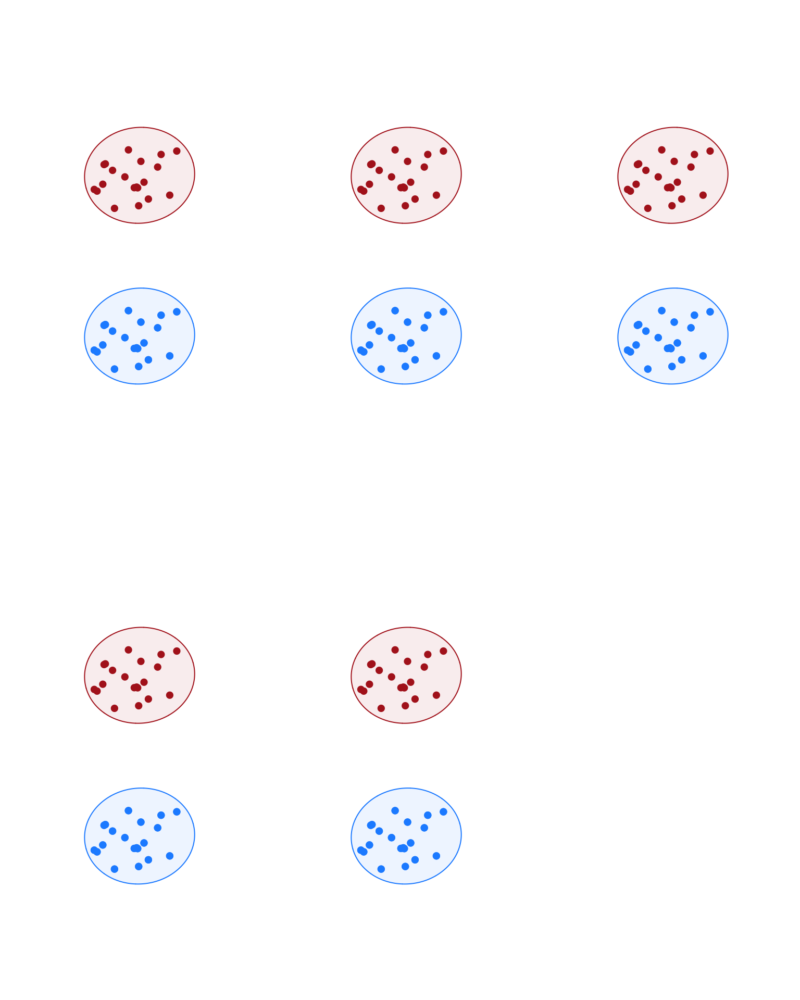

CMRnet.Rmd# load packages library(CMRnet)
CMRnet comes with three example datasets loaded which help demonstrate how data should be organised when using CMRnet and how the functions work. In this vignette we will use these example dataset to demonstrate the functions of CMRnet.
# load in data data(cmrData) data(cmrData2) data(cmrData3) # look at the datasets str(cmrData) #> 'data.frame': 1230 obs. of 5 variables: #> $ id : num 69 60 24 26 71 43 17 70 10 79 ... #> $ loc : chr "h" "h" "r" "m" ... #> $ x : num 13 13 20 14 15 14 8 18 18 20 ... #> $ y : num 8 8 2 10 17 10 14 8 3 2 ... #> $ date: chr "2010-01-20" "2010-01-20" "2010-01-20" "2010-01-20" ... str(cmrData2) #> 'data.frame': 1230 obs. of 6 variables: #> $ id : num 69 60 24 26 71 43 17 70 10 79 ... #> $ loc : chr "h" "h" "r" "m" ... #> $ x : num 13 13 20 14 15 14 8 18 18 20 ... #> $ y : num 8 8 2 10 17 10 14 8 3 2 ... #> $ date : chr "2010-01-20" "2010-01-20" "2010-01-20" "2010-01-20" ... #> $ layer: Factor w/ 2 levels "F","M": 1 2 2 2 1 1 1 2 2 1 ... str(cmrData3) #> 'data.frame': 1191 obs. of 5 variables: #> $ id : int 11 3 18 15 20 23 29 26 3 20 ... #> $ loc : Factor w/ 20 levels "a","b","c","d",..: 7 12 14 16 2 6 14 5 16 2 ... #> $ x : int 20 2 7 18 11 12 7 15 18 11 ... #> $ y : int 10 9 5 18 13 8 5 14 18 13 ... #> $ date: POSIXct, format: "2020-06-18 02:32:01" "2020-06-18 02:32:01" ...
A principal aim of the package is to facilitate the construction of networks from mark-recapture data. CMRnet can be used to construct two types of social network:
In both co-capture and movement networks, the package allows the use of either date or date/time information to construct social networks. The former will be applicable to most types of mark-recapture data, but the latter will be useful when capture events occur at much higher resolutions.
First we construct co-capture networks using the the normal and high resolution versions of the co-capture network function. The normal version DynamicNetCreate() defines the interval window in days.
# Set parameters for the function #### # Start Date mindate <- "2010-01-01" # End Date maxdate <- "2015-01-01" # Length of time in days within which individuals are considered to be co-captured intwindow <- 60 # Length of each network window in months. We will use 5 12-month windows in this example netwindow <- 12 # Overlap between network windows in months (we have no overlap in this example) overlap <- 0 # Spatial tolerance for defining co-captures. Captures within a threshold distance (rather than simply at the same location) are considered when this is set to be greater than zero spacewindow <- 0 # Create co-capture (social) networks #### # index=FALSE indicates that we want edges to be weighted by the number of movements (see help pages for the alternative) netdat <- DynamicNetCreate( data = cmrData, intwindow = intwindow, mindate = mindate, maxdate = maxdate, netwindow = netwindow, overlap = overlap, spacewindow = spacewindow, index=FALSE ) #> [1] "End of final network window aligns with end of study"
[==================================================================] 100%
[==================================================================] 100%
[==================================================================] 100%
[==================================================================] 100%
[==================================================================] 100%The high resolution DynamicNetCreateHi sets the interval window in minutes.
# Set parameters for the function #### mindate <- "2019-12-01 00:00:00" maxdate <- "2020-07-01 00:00:00" # The interaction window is now in minutes. We set it to be one day here. intwindow <- 24*60 # The network window is now in days netwindow <- 20 # The overlap is now also in days overlap <- 2 spacewindow <- 0 ## Create high-resolution co-capture (social) networks netdat_hi<-DynamicNetCreateHi( data=cmrData3, intwindow=intwindow, mindate=mindate, maxdate=maxdate, netwindow=netwindow, overlap=overlap, spacewindow=spacewindow, index=FALSE) #> [1] "Final network window stops 18720 minutes before the end of the study"
[==================================================================] 100%
[==================================================================] 100%
[==================================================================] 100%
[==================================================================] 100%
[==================================================================] 100%
[==================================================================] 100%
[==================================================================] 100%
[==================================================================] 100%
[==================================================================] 100%
[==================================================================] 100%
[==================================================================] 100%Next we do the same for the creation of single layer movement networks using MoveNetCreate and MoveNetCreateHi.
# Set parameters for the function #### #Start Date mindate <- "2010-01-01" # End Date maxdate <- "2015-01-01" # Length of time in days within which individuals are considered to be co-captured intwindow <- 60 # Length of each network window in months. We will use 5 12-month windows in this example netwindow <- 12 # Overlap between network windows in months (we have no overlap in this example) overlap <- 0 # Generate movement network # nextonly=TRUE indicates that only direct movements between groups should be considered (see help pages) movenetdat <- MoveNetCreate( data = cmrData, intwindow = intwindow, mindate = mindate, maxdate = maxdate, netwindow = netwindow, overlap = overlap, nextonly = TRUE, index=FALSE ) #> [1] "End of final network window aligns with end of study"
[==================================================================] 100%
[==================================================================] 100%
[==================================================================] 100%Again the high resolution MoveNetCreateHi defines the interval window in minutes.
# Set parameters for the function #### mindate <- "2019-12-01 00:00:00" maxdate <- "2020-07-01 00:00:00" # Interaction window is now in minutes intwindow <- 30*24*60 # The network window is now in days netwindow <- 60 #The overlap is now also in days overlap <- 0 spacewindow <- 0 # Generate movement network # nextonly=TRUE indicates that only direct movements between groups should be considered (see help pages) movenetdat_hi <- CMRnet::MoveNetCreateHi( data = cmrData3, intwindow = intwindow, mindate = mindate, maxdate = maxdate, netwindow = netwindow, overlap = overlap, nextonly = TRUE, index=FALSE ) #> [1] "Final network window stops 1567049760 minutes before the end of the study"
[==================================================================] 100%
[==================================================================] 100%
[==================================================================] 100%Next we construct multiplex movement networks using the standard function to show how to use the alternative data format. These networks are useful when there are multiple layered movement networks (i.e. a separate network for males and females).
#Start Date mindate <- "2010-01-01" # End Date maxdate <- "2015-01-01" # Length of time in days within which individuals are considered to be co-captured intwindow <- 60 # Length of each network window in months. We will use 5 12-month windows in this example netwindow <- 12 # Overlap between network windows in months (we have no overlap in this example) overlap <- 0 # Generate multiplex movement network multimovenetdat <- CMRnet::MultiMoveNetCreate( data = cmrData2, intwindow = intwindow, mindate = mindate, maxdate = maxdate, netwindow = netwindow, overlap = overlap, nextonly = TRUE, index=FALSE ) #> [1] "End of final network window aligns with end of study"
Above we have demonstrated how to generate networks using CMRnet. Next we demonstrate the package’s functionality for onward analysis and plotting.
To faciliate analysis we provide a function that can convert CMRnet objects into lists of igraph objects. This is a commonly-used network analysis package in R that provides various functions to calculate individual and network-level measures of network structure.
We also provide functions that can produce plots of these lists of igraph networks to enable basic visualisation of the networks produced.
Here is an example where plot a social network.
##Convert social networks into a list of igraph networks cc_nets<-CMRnet::cmr_igraph(netdat_hi,type="social") #Look at the structure of the object generated print(cc_nets) #> [[1]] #> [[1]][[1]] #> IGRAPH 7cbc8b9 UNW- 31 34 -- #> + attr: name (v/c), weight (e/n) #> + edges from 7cbc8b9 (vertex names): #> [1] 4 --22 4 --23 5 --42 6 --23 6 --25 6 --30 6 --43 6 --50 9 --28 9 --29 #> [11] 9 --42 10--49 16--19 21--23 22--31 22--40 22--43 22--49 23--25 23--50 #> [21] 25--41 25--50 27--50 28--29 28--42 29--42 30--31 30--32 30--43 31--32 #> [31] 31--43 31--49 43--46 43--49 #> #> [[1]][[2]] #> IGRAPH 7071767 UNW- 48 65 -- #> + attr: name (v/c), weight (e/n) #> + edges from 7071767 (vertex names): #> [1] 2 --36 3 --4 3 --19 3 --40 4 --22 6 --11 6 --23 6 --25 6 --29 6 --30 #> [11] 6 --38 6 --43 6 --50 7 --10 7 --16 7 --32 9 --13 9 --26 9 --28 9 --42 #> [21] 10--32 10--37 10--49 11--29 11--46 12--17 13--20 13--26 13--44 13--50 #> [31] 14--43 16--19 16--36 17--25 17--32 17--37 18--27 19--24 19--35 20--21 #> [41] 20--22 20--24 20--39 20--44 21--39 22--23 22--24 22--36 22--42 23--25 #> [51] 23--36 23--50 24--35 25--32 25--50 26--38 27--31 27--33 27--50 28--42 #> [61] 30--43 31--33 34--42 37--49 47--50 #> #> [[1]][[3]] #> IGRAPH 98eeb76 UNW- 33 27 -- #> + attr: name (v/c), weight (e/n) #> + edges from 98eeb76 (vertex names): #> [1] 1 --28 2 --38 2 --40 3 --11 3 --46 6 --22 6 --26 6 --38 8 --27 9 --13 #> [11] 10--34 11--46 12--18 12--34 12--36 13--37 18--34 18--36 22--26 22--34 #> [21] 22--38 24--26 26--38 34--36 35--36 38--40 48--50 #> #> [[1]][[4]] #> IGRAPH 8df6c58 UNW- 43 65 -- #> + attr: name (v/c), weight (e/n) #> + edges from 8df6c58 (vertex names): #> [1] 1 --6 1 --34 1 --47 1 --49 2 --13 2 --35 3 --11 3 --24 3 --39 3 --46 #> [11] 4 --40 4 --47 5 --29 5 --36 5 --42 5 --44 6 --34 6 --49 8 --20 8 --22 #> [21] 8 --43 9 --31 10--12 10--35 10--45 10--50 11--23 11--24 11--32 11--46 #> [31] 11--49 12--35 12--45 12--50 13--19 13--35 13--47 13--50 14--19 14--25 #> [41] 14--33 15--20 15--47 19--20 19--33 19--35 19--47 19--50 20--39 20--47 #> [51] 22--43 22--49 23--49 26--31 29--42 29--43 29--44 33--47 34--49 35--45 #> [61] 35--50 40--47 42--44 42--48 45--50 #> #> [[1]][[5]] #> IGRAPH 063b686 UNW- 50 150 -- #> + attr: name (v/c), weight (e/n) #> + edges from 063b686 (vertex names): #> [1] 1 --2 1 --13 1 --43 1 --45 1 --49 2 --11 2 --18 2 --20 2 --27 2 --33 #> [11] 2 --39 2 --40 2 --42 2 --48 3 --11 3 --24 3 --44 4 --25 4 --27 4 --28 #> [21] 4 --33 4 --43 6 --20 7 --16 7 --44 8 --13 8 --20 8 --22 8 --34 8 --43 #> [31] 9 --40 10--20 10--40 10--41 10--50 11--19 11--22 11--24 11--27 11--28 #> [41] 11--32 12--14 12--34 13--14 13--24 13--27 13--29 13--36 13--37 13--39 #> [51] 13--42 13--45 13--47 14--15 14--17 14--27 14--34 14--36 14--37 14--42 #> [61] 15--17 15--21 15--35 15--38 16--30 16--44 17--23 17--27 17--28 17--47 #> [71] 17--48 18--23 18--49 19--20 19--21 19--22 19--24 19--32 19--33 19--35 #> + ... omitted several edges #> #> [[1]][[6]] #> IGRAPH ff2260d UNW- 49 177 -- #> + attr: name (v/c), weight (e/n) #> + edges from ff2260d (vertex names): #> [1] 1 --7 1 --14 1 --18 1 --24 1 --28 1 --30 1 --33 1 --35 1 --43 1 --44 #> [11] 1 --45 1 --50 2 --37 2 --41 3 --12 3 --13 3 --15 3 --26 3 --27 3 --32 #> [21] 3 --37 3 --50 4 --6 4 --9 4 --10 4 --31 5 --34 6 --7 6 --10 6 --31 #> [31] 6 --47 7 --35 7 --47 7 --50 8 --29 9 --14 9 --16 9 --18 9 --19 9 --20 #> [41] 9 --33 9 --34 10--19 10--31 10--32 10--34 10--36 11--22 11--35 11--45 #> [51] 11--47 11--48 12--31 12--32 12--33 12--35 12--36 12--45 12--48 13--15 #> [61] 13--18 13--26 13--27 13--37 14--16 14--20 14--30 14--33 14--35 14--47 #> [71] 15--20 15--26 15--27 15--37 15--47 16--20 16--33 16--39 16--43 16--47 #> + ... omitted several edges #> #> [[1]][[7]] #> IGRAPH dd0390a UNW- 43 52 -- #> + attr: name (v/c), weight (e/n) #> + edges from dd0390a (vertex names): #> [1] 1 --11 1 --21 2 --20 3 --5 3 --36 3 --41 4 --31 4 --46 5 --36 5 --41 #> [11] 6 --32 8 --47 9 --35 11--19 11--21 11--26 11--29 11--48 12--17 12--23 #> [21] 12--48 16--19 16--20 17--23 18--32 18--40 19--20 19--26 19--29 19--48 #> [31] 20--26 20--41 24--32 24--50 26--29 26--30 26--37 26--41 26--44 26--48 #> [41] 27--40 27--49 29--48 30--37 30--44 31--46 32--33 32--50 36--41 37--44 #> [51] 40--49 41--48 #> #> [[1]][[8]] #> IGRAPH 7501671 UNW- 49 162 -- #> + attr: name (v/c), weight (e/n) #> + edges from 7501671 (vertex names): #> [1] 1 --3 1 --6 1 --10 1 --12 1 --13 1 --18 1 --21 1 --26 1 --32 1 --42 #> [11] 1 --43 2 --3 2 --8 2 --12 2 --13 2 --20 2 --24 2 --37 2 --40 3 --12 #> [21] 3 --13 3 --20 3 --26 3 --31 3 --37 3 --43 3 --46 4 --5 4 --9 4 --12 #> [31] 4 --20 4 --22 4 --27 4 --36 4 --39 5 --12 5 --24 5 --27 5 --48 6 --13 #> [41] 6 --18 6 --26 6 --31 6 --32 6 --34 6 --43 7 --16 7 --17 7 --20 7 --21 #> [51] 7 --26 7 --28 7 --34 7 --39 7 --44 7 --48 7 --49 8 --12 8 --17 8 --32 #> [61] 8 --37 8 --42 8 --43 9 --26 9 --27 9 --34 9 --38 9 --39 9 --46 10--13 #> [71] 10--21 10--32 10--37 11--42 11--50 12--14 12--17 12--22 12--23 12--26 #> + ... omitted several edges #> #> [[1]][[9]] #> IGRAPH 7dc10e3 UNW- 43 58 -- #> + attr: name (v/c), weight (e/n) #> + edges from 7dc10e3 (vertex names): #> [1] 1 --3 1 --25 1 --27 1 --36 1 --38 1 --39 2 --4 2 --10 2 --31 2 --34 #> [11] 3 --11 3 --24 3 --28 3 --38 3 --39 3 --49 4 --10 6 --21 6 --25 8 --10 #> [21] 8 --11 8 --19 8 --40 9 --10 9 --21 9 --22 9 --29 9 --34 9 --35 9 --47 #> [31] 10--11 10--19 10--23 10--26 10--47 10--48 11--28 11--38 12--35 12--45 #> [41] 14--28 14--38 19--29 22--29 22--34 22--35 26--48 27--36 28--32 28--38 #> [51] 28--49 29--34 29--35 31--32 31--34 34--35 35--45 38--47 #> #> [[1]][[10]] #> IGRAPH 4aaf963 UNW- 39 40 -- #> + attr: name (v/c), weight (e/n) #> + edges from 4aaf963 (vertex names): #> [1] 1 --7 1 --38 2 --33 6 --13 6 --14 6 --35 6 --38 6 --40 6 --47 8 --40 #> [11] 12--26 12--36 12--50 13--35 14--17 14--25 14--32 14--42 14--47 14--48 #> [21] 18--23 19--29 23--48 25--32 25--42 25--48 26--29 26--43 26--48 28--41 #> [31] 29--36 29--43 31--50 32--42 32--48 35--37 38--39 38--40 42--48 43--49 #> #> [[1]][[11]] #> IGRAPH 00eb302 UNW- 39 32 -- #> + attr: name (v/c), weight (e/n) #> + edges from 00eb302 (vertex names): #> [1] 1 --9 1 --33 1 --47 3 --8 3 --17 3 --28 3 --50 4 --11 4 --18 6 --13 #> [11] 6 --35 8 --12 8 --17 9 --47 11--18 12--26 12--50 13--35 15--22 15--43 #> [21] 21--35 21--41 22--43 26--29 26--43 28--47 29--36 29--40 29--43 31--46 #> [31] 35--41 38--39 #> #> #> [[2]] #> IGRAPH 2971146 UNW- 50 607 -- #> + attr: name (v/c), weight (e/n) #> + edges from 2971146 (vertex names): #> [1] 1--2 1--3 1--6 1--7 1--9 1--10 1--11 1--12 1--13 1--14 1--18 1--21 #> [13] 1--24 1--25 1--26 1--27 1--28 1--30 1--32 1--33 1--34 1--35 1--36 1--38 #> [25] 1--39 1--42 1--43 1--44 1--45 1--47 1--49 1--50 2--3 2--4 2--8 2--10 #> [37] 2--11 2--12 2--13 2--18 2--20 2--24 2--27 2--31 2--33 2--34 2--35 2--36 #> [49] 2--37 2--38 2--39 2--40 2--41 2--42 2--48 3--4 3--5 3--8 3--11 3--12 #> [61] 3--13 3--15 3--17 3--19 3--20 3--24 3--26 3--27 3--28 3--31 3--32 3--36 #> [73] 3--37 3--38 3--39 3--40 3--41 3--43 3--44 3--46 3--49 3--50 4--5 4--6 #> [85] 4--9 4--10 4--11 4--12 4--18 4--20 4--22 4--23 4--25 4--27 4--28 4--31 #> + ... omitted several edges #Note that cc_nets[[1]] is a list of the networks for each network window and cc_nets[[2]] is the overall (aggregated) network ##Now we can plot the networks produced #Setting fixed_locs to TRUE means nodes have the same coordinates in each plot #Setting dynamic to FALSE and rows to 2 means we produce a multipanelled figure with 2 rows #We can use additional arguments from the plot.igraph function. Here we suppress node labels as an example. CMRnet::cmrSocPlot(nets=cc_nets,fixed_locs=TRUE,dynamic=FALSE,rows=4,vertex.label=NA)

And here is an example where plot a movement network.
##Convert social networks into a list of igraph networks m_nets<-CMRnet::cmr_igraph(movenetdat_hi,type="movement") ##Now we can plot the networks produced #Setting fixed_locs to TRUE means nodes have the same coordinates in each plot #Setting dynamic to FALSE and rows to 2 means we produce a multipanelled figure with 2 rows #We can use additional arguments from the plot.igraph function. Here we suppress node labels as an example. CMRnet::cmrMovPlot(nets=m_nets,fixed_locs=TRUE,dynamic=FALSE,rows=2,edge.arrow.size=0.5)

The cmr_igraph function can be used in much the same way for multiplex network objects, but the plotting is rather different using a 3d scatterplot to show the layers together.
##Convert social networks into a list of igraph networks mm_nets<-CMRnet::cmr_igraph(multimovenetdat,type="multiplex") ##Now we can plot the networks produced #Setting fixed_locs to TRUE means nodes have the same coordinates in each plot #Setting dynamic to FALSE and rows to 2 means we produce a multipanelled figure with 2 rows #We can use additional arguments from the plot.igraph function. Here we suppress node labels as an example. CMRnet::cmrMultiplexPlot(nets=mm_nets,fixed_locs=TRUE,dynamic=FALSE,rows=2,layer_colours=c("dodgerblue","firebrick"))

Please note that the functionality for plotting multiplex networks in this way is rather limited and intended to provide basic visualisations. If more sophisticated plots are required then the function can be adjusted by the user to suit their preferences
We now demonstrate how CMRnet can be used to conduct premutations of networks generated using the package. These permutations can be used for statistical inference.
Two broad types of permutations are possible within CMRnet.
Post-network permutations can be conducted in two ways in CMRnet. Unrestricted swaps are conducted using the function cmrNodeswap() which is demonstrated here. Swaps can also be restricted to only occur between particular pairs of individuals (e.g. those captured at the same locations) and are demonstrated in one of the empirical case studies.
##Unrestricted node swaps #Note that you can set the desired number of permuted networks and need to indicate whether the network is multiplex or not ns_nets <- CMRnet::cmrNodeswap(netdat, n.rand = 1000, multi = FALSE) #Show dimensions of output object lapply(ns_nets,dim) #> [[1]] #> [1] 180 180 1000 #> #> [[2]] #> [1] 180 180 1000 #> #> [[3]] #> [1] 180 180 1000 #> #> [[4]] #> [1] 180 180 1000 #> #> [[5]] #> [1] 180 180 1000
The output of the post-network permutations is a list, where each element of the list corresponds to a particular network window and contains an array of the permuted networks for that window. For multiplex networks this list is nested (see manual pages).
Pre-network permutations have separate functions for co-capture (social) networks and movement networks and we demonstrate both below. They differ through the DatastreamPermSoc() function swapping individual identities between capture events and the DatastreamPermSpat() function swapping locations instead
First co-capture networks
## Reset parameters for co-capture network generation mindate <- "2010-01-01" maxdate <- "2015-01-01" intwindow <- 60 netwindow <- 12 overlap <- 0 spacewindow <- 0 ## Set new parameter for the permutations #Whether swaps should be constrained to occur only between capture events at the same time same.time = FALSE #An upper limit for the number of days between capture events for swaps to be allowed time.restrict = 6 #Whether swaps should be constrained to occur only between capture events at the same location same.spat = FALSE #Whether swaps should be constrained to occur within a threshold distance (setting to "n" means this argument is ignored) spat.restrict = "n" #The length of the burn-in period before networks are saved n.burnin = 10 #The number of swaps between each saved result n.swaps = 5 #The number of permuted datasets to be saved. Not we have set this to be small so that the function runs quickly (normally it would be 1000, 10,000 etc.) n.rand = 2 #The number of days around a capture event that an individual can't be swapped into (see manual pages) buffer = 0 ## Run permutations #Note we have set iter=FALSE here. iter=TRUE allows these swaps to be conducted one at a time to help with memory issues Rs <- CMRnet::DatastreamPermSoc( data = cmrData, intwindow, mindate, maxdate, netwindow, overlap, spacewindow, same.time, time.restrict, same.spat, spat.restrict, n.swaps, n.rand, burnin = TRUE, n.burnin, iter = FALSE, buffer=buffer ) #> [1] "End of final network window aligns with end of study" #The first element of the output is a list where each element corresponds to a network window and contains an array with the permuted networks. lapply(Rs[[1]],dim) #> [[1]] #> [1] 180 180 2 #> #> [[2]] #> [1] 180 180 2 #> #> [[3]] #> [1] 180 180 2 #> #> [[4]] #> [1] 180 180 2 #> #> [[5]] #> [1] 180 180 2 #The second element is the new node.exist indicator dim(Rs[[2]]) #> [1] 180 6 ##If instead we set iter=TRUE #(not we have changed some of the other arguments too) Rs2 <- CMRnet::DatastreamPermSoc( data = cmrData, intwindow, mindate, maxdate, netwindow, overlap, spacewindow, same.time, time.restrict, same.spat, spat.restrict, n.swaps=10, n.rand=1, burnin = FALSE, n.burnin=0, iter = TRUE, buffer=buffer ) #> [1] "End of final network window aligns with end of study" #Instead, Rs2[[1]] is the new dataframe after the swaps, Rs2[[2]] are the networks and Rs2[[3]] the new node.exist dim(Rs2[[1]]) #> [1] 1230 5
Now movement networks
## Reset parameters for co-capture network generation mindate <- "2010-01-01" maxdate <- "2015-01-01" intwindow <- 60 netwindow <- 12 overlap <- 0 same.time=FALSE time.restrict=6 spat.restrict="n" #Whether to restrict swaps by the identity of the individual captured same.id=FALSE n.swaps=10 n.rand=100 n.burnin=100 warn.thresh=10000 mRs <- CMRnet::DatastreamPermSpat( data = cmrData, intwindow=intwindow, mindate=mindate, maxdate=maxdate, netwindow=netwindow, overlap=overlap, nextonly = TRUE, same.time=same.time, time.restrict=time.restrict, spat.restrict=spat.restrict, same.id=same.id, n.swaps=n.swaps, n.rand=n.rand, burnin = TRUE, n.burnin=n.burnin, warn.thresh=warn.thresh, iter = FALSE ) #> [1] "End of final network window aligns with end of study" #Demonstrate that the randomised networks have been saved correctly lapply(mRs[[1]],dim) #> [[1]] #> [1] 20 20 100 #> #> [[2]] #> [1] 20 20 100 #> #> [[3]] #> [1] 20 20 100 #> #> [[4]] #> [1] 20 20 100 #> #> [[5]] #> [1] 20 20 100